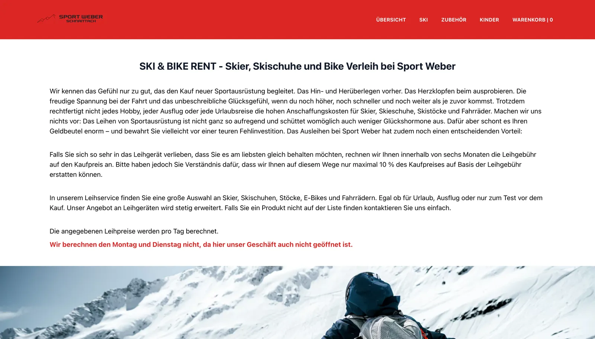

Individual-Software
Software, die zu deinen Abläufen passt.
Wenn keine fertige Software zu deinen Abläufen passt, bauen wir dir eine, die es tut. Wir digitalisieren und automatisieren, was dich heute Zeit kostet – praxisnah, verständlich und gemeinsam mit dir entwickelt.

Wenn Abläufe mehr Zeit kosten als das eigentliche Geschäft
- „Rechnungen, Listen, Termine – vieles läuft bei mir doppelt und von Hand.“
- „Meine Daten stecken in Excel-Tabellen, die nur eine Person wirklich versteht.“
- „Standardsoftware habe ich probiert – sie passt einfach nicht zu meinen Abläufen.“
Kommt dir bekannt vor? Dann bist du hier richtig.
Weniger Handarbeit, mehr Überblick
Automatisierung
Rechnungen schreiben, Termine koordinieren, Bestände pflegen: Vieles davon läuft in kleinen Betrieben noch von Hand. Wir automatisieren diese Abläufe, damit du deine Zeit wieder für dein eigentliches Geschäft hast.
Digitalisierung deiner Abläufe
Zettel, Excel-Listen und Insellösungen ersetzen wir durch ein System, das zu deinem Betrieb passt – vom Verleihsystem mit automatischer Rechnung bis zur Buchungsverwaltung.
Wächst mit deinem Unternehmen
Deine Software läuft sicher in der Cloud, ist von überall erreichbar und lässt sich jederzeit erweitern. Neue Funktion, neue Schnittstelle, mehr Nutzer? Bauen wir ein, sobald du so weit bist.
Vom Zeitfresser zur fertigen Lösung
Ein typisches Software-Projekt – der genaue Zeitplan hängt vom Umfang ab.
- 01
Woche 1
Abläufe verstehen
Wir schauen uns deine Arbeitsabläufe an – am liebsten vor Ort – und finden die Zeitfresser.
- 02
Woche 2
Konzept & Festpreis
Du bekommst einen konkreten Vorschlag – verständlich erklärt und mit klarem Preis.
- 03
ab Woche 3
Entwicklung in Etappen
Wir bauen die Lösung Schritt für Schritt – du testest früh mit echten Daten aus deinem Alltag.
- 04
Livegang
Livegang & Betreuung
Dein Team wird eingewiesen – und wir bleiben für Fragen und Erweiterungen an Bord.
„Wir haben unseren Rent-Shop zusammen mit wesolve-IT entworfen und sind mit Planung und Umsetzung sehr zufrieden. Herr Reinert hat unsere Wünsche bei uns vor Ort aufgenommen und uns oft sogar funktionellere Lösungen gezeigt, die uns Arbeitsschritte ersparen.“
Sport-Weber Schnaittach
Verleihsoftware mit automatischer Rechnungserstellung – spart bei jeder einzelnen Ausleihe Zeit und Papierkram.
Projekt ansehenImmer dabei – ohne Aufpreis
Festpreis-Angebot
Keine versteckten Kosten, keine Überraschungen.
Einweisung deines Teams
Wir zeigen allen alles, bis die Lösung im Alltag sitzt.
Hosting & Betrieb
Deine Software läuft sicher – wir kümmern uns um die Technik.
DSGVO-konform
Deine Daten und die deiner Kunden sind geschützt.
Jederzeit erweiterbar
Neue Funktionen kommen dazu, wenn dein Betrieb sie braucht.
Direkter Draht
Du sprichst mit dem Entwickler – nicht mit einer Hotline.
Häufige Fragen
Deine Frage ist nicht dabei? Schreib uns einfach.
Welcher Ablauf kostet dich gerade am meisten Zeit?
Erzähl uns davon – wir sagen dir ehrlich, ob und wie sich eine individuelle Lösung für dich lohnt.